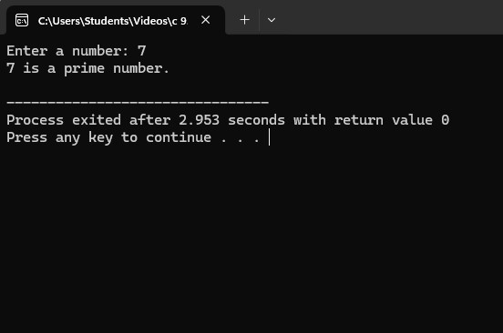
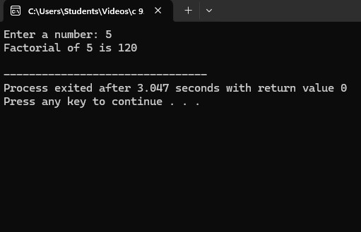
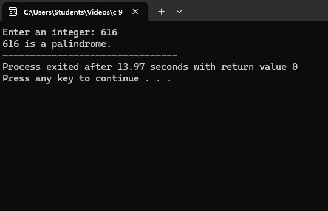
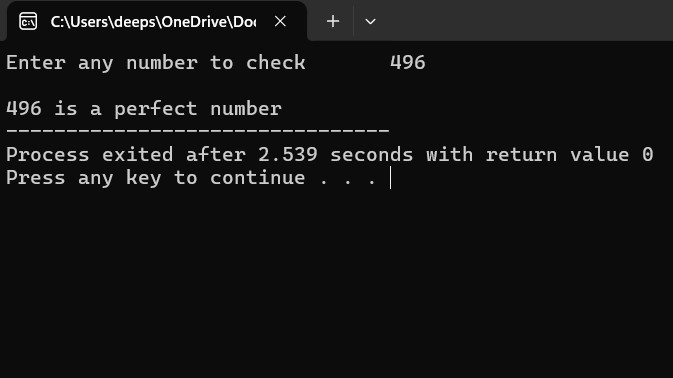
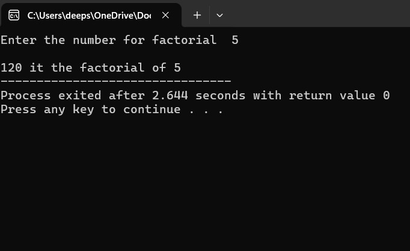
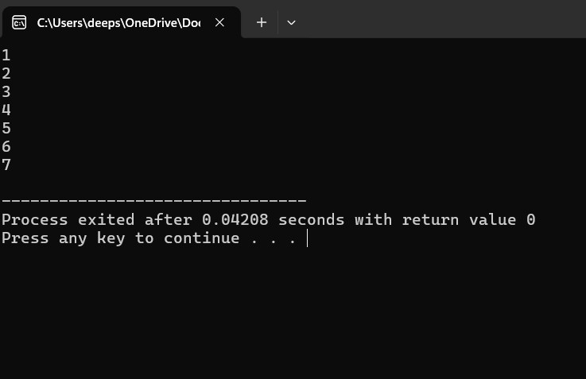
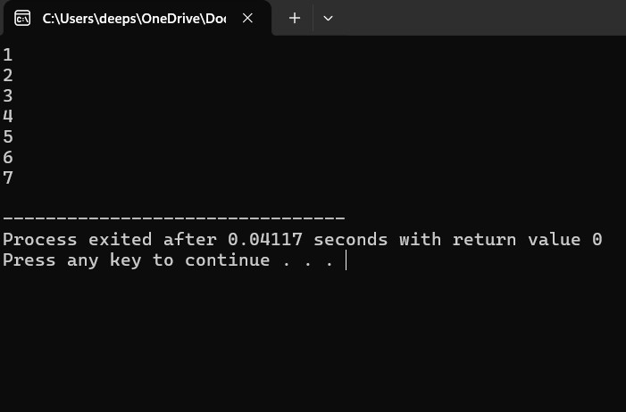
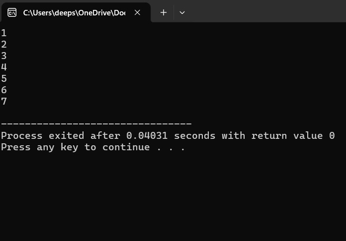
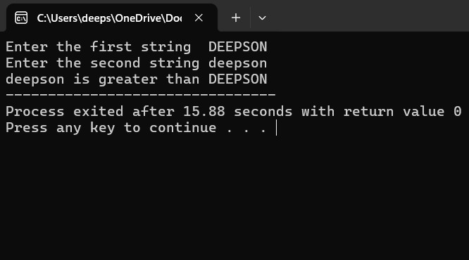

Programming is the process of designing and building executable computer software to accomplish a specific task. In the world of programming, there are certain fundamental concepts that help programmers structure and organize their code efficiently. Some of the most important concepts include variables, data types, control structures, functions, loops, and arrays. These concepts form the foundation of most programming languages and are essential for writing effective, efficient code.
int num = 5; defines an integer variable named "num" with a value of 5.int (for integers), float (for decimal numbers), char (for single characters), and string (for text).if, else, and switch statements, which allow decisions to be made based on conditions.for, while, and do-while loops.In C programming, logical operators like && (AND), || (OR), and ! (NOT) are commonly used to create conditions for control structures. These operators help in decision-making and allow for more complex expressions in program logic.
#includeint main() { int a, i, x = 1; printf("Enter a number: "); scanf("%d", &a); for (i = 1; i <= a; i++) { x = x * i; } printf("Factorial of %d is %d\n", a, x); return 0; }
#includeint main() { int n, a = 0, b, x; printf("Enter an integer: "); scanf("%d", &n); x = n; while (n != 0) { b = n % 10; a = a * 10 + b; n /= 10; } if (x == a) printf("%d is a palindrome.", x); else printf("%d is not a palindrome.", x); return 0; }
#includeint main() { int n, a = 0, b = 1, x, i = 3; printf("Enter the number of terms: "); scanf("%d", &n); printf("Fibonacci Series: %d, %d", a, b); for (i <= n; i++) { x = a + b; printf(", %d", x); a = b; b = x; } printf("\n"); return 0; }
#includeint main() { int n, i, y = 0; printf("Enter any number to check: "); scanf("%d", &n); for(i = 1; i < n; i++) { if(n % i == 0) { y = y + i; } } if(y == n) { printf("\n%d is a perfect number", n); } else { printf("%d isn't a perfect number", n); } return 0; }
#includeint main(){ long int a, b, c = 1; printf("Enter the number for factorial"); scanf("%ld", &a); for(b = a; b >= 1; b--){ c = c * b; } printf("%ld is the factorial of %ld", c, a); return 0; }
Control structures are just a way to specify the flow of control in programs. Any algorithm or program can be clearer and more understandable if it uses self-contained modules called logic or control structures. It essentially analyzes and chooses in which direction a program flows based on certain parameters or conditions.
For loop:#includeint main(){ int i; for(i = 1; i <= 7; i++){ printf("%d\n", i); } return 0; }
#includeint main(){ int i = 1; while(i <= 7){ printf("%d\n", i); i++; } return 0; }
#includeint main(){ int i = 1; do { printf("%d\n", i); i++; } while(i <= 7); return 0; }
#includeint main(){ int a[10], b[10]; printf("Enter the first string\t"); gets(a); printf("Enter the second string\t"); gets(b); if(strcmp(a, b) == 0) { printf("The given strings are equal"); } else if(strcmp(a, b) == 1) { printf("%s is greater than %s", a, b); } else { printf("%s is greater than %s", b, a); } return 0; }